Number Coloring Pages Fun Number Learning For Toddlers & Preschoolers
This free printable number coloring pages gives toddlers and preschoolers a fun, no-prep way to build creativity and fine motor skills. Just download, print, and let them color.
Quick Answer
Numbers get colorful here: this page holds number coloring pages for every number from 1 to 10, plus a matching tracing page for each one — twenty free sheets in all. Toddlers and preschoolers color each big number, then trace it to build number recognition and pencil control. Download, print at home, no signup.
At a Glance
- Ages: Toddlers and preschoolers
- Activity: Coloring pages for the numbers 1 to 10
- Skills: Number recognition and coloring
- Format: Print at home, letter size
- Cost: Free, no signup
Number 1 Coloring Page
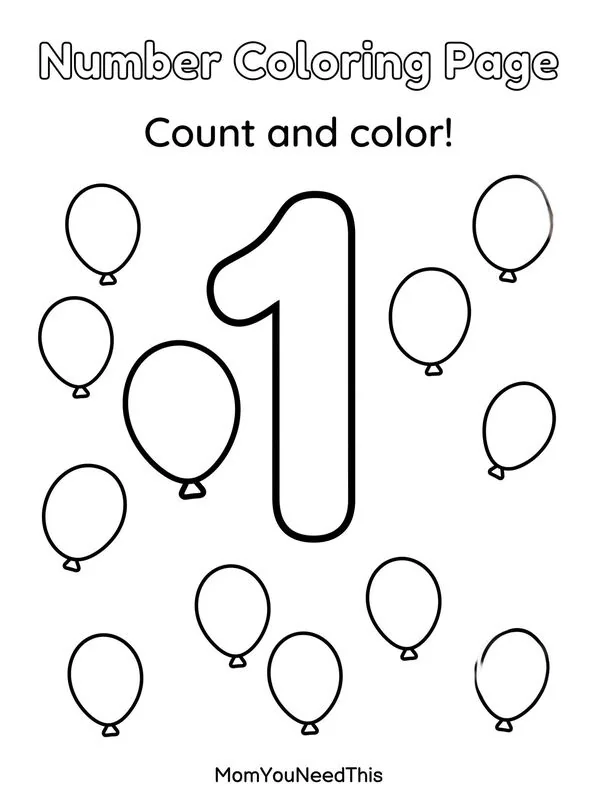
🎨 Download Your Free Number 1 Coloring Page
Count and color the number 1!
⬇️ Download Number 1 🖨️ Print(opens in new tab)🎁 Free printable for toddlers & preschoolers
Number 2 Coloring Page
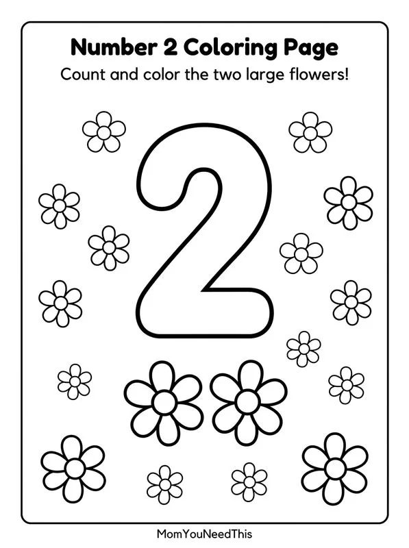
🎨 Download the Number 2 Coloring Page
Count and color the number 2!
⬇️ Download Number 2 🖨️ Print(opens in new tab)🎁 Free printable for toddlers & preschoolers
Number 3 Coloring Page
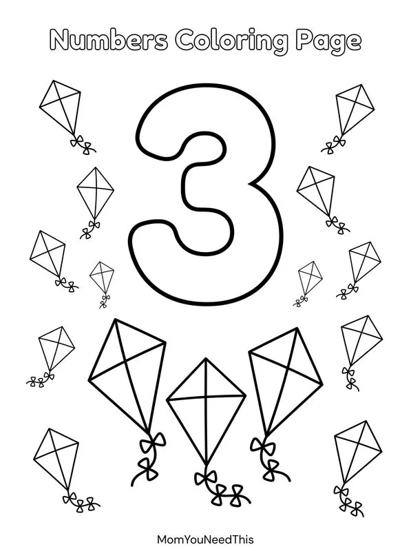
🎨 Download the Number 3 Coloring Page
Count and color the number 3!
⬇️ Download Number 3 🖨️ Print(opens in new tab)🎁 Free printable for toddlers & preschoolers
Number 4 Coloring Page
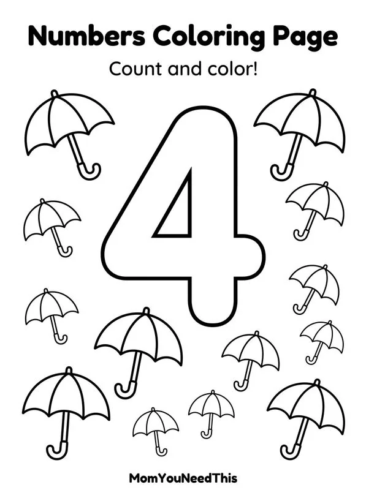
🎨 Download the Number 4 Coloring Page
Count and color the number 4!
⬇️ Download Number 4 🖨️ Print(opens in new tab)🎁 Free printable for toddlers & preschoolers
Number 5 Coloring Page
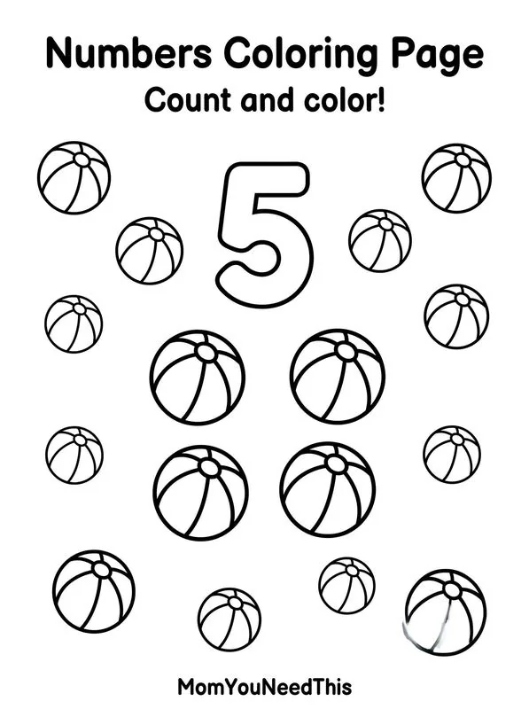
🎨 Download the Number 5 Coloring Page
Count and color the number 5!
⬇️ Download Number 5 🖨️ Print(opens in new tab)🎁 Free printable for toddlers & preschoolers
Number 6 Coloring Page
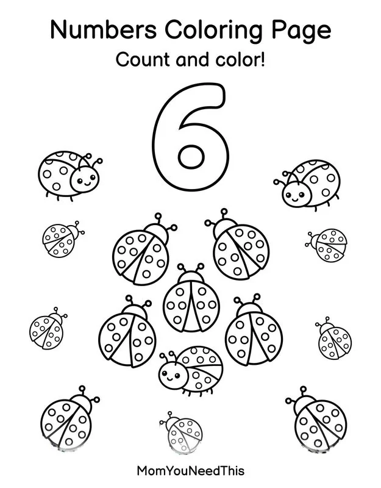
🎨 Download the Number 6 Coloring Page
Count and color the number 6!
⬇️ Download Number 6 🖨️ Print(opens in new tab)🎁 Free printable for toddlers & preschoolers
Number 7 Coloring Page
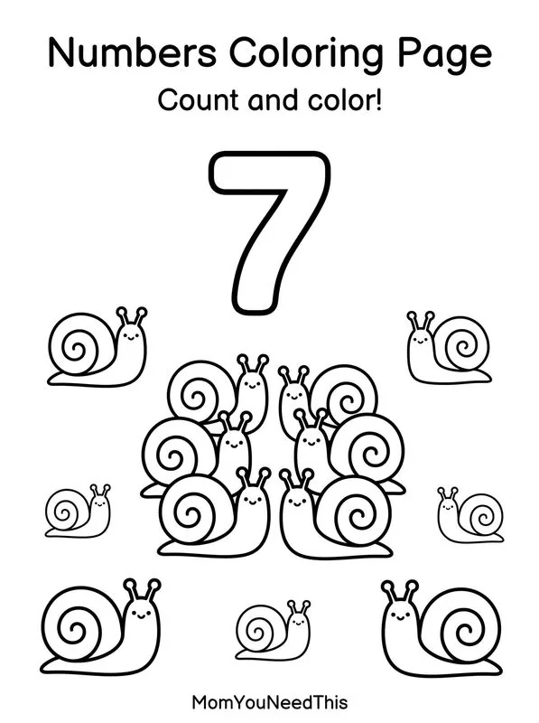
🎨 Download the Number 7 Coloring Page
Count and color the number 7!
⬇️ Download Number 7 🖨️ Print(opens in new tab)🎁 Free printable for toddlers & preschoolers
Number 8 Coloring Page
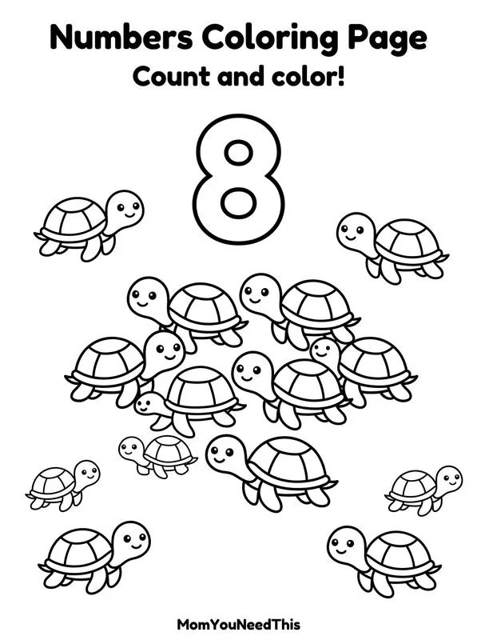
🎨 Download the Number 8 Coloring Page
Count and color the number 8!
⬇️ Download Number 8 🖨️ Print(opens in new tab)🎁 Free printable for toddlers & preschoolers
Number 9 Coloring Page
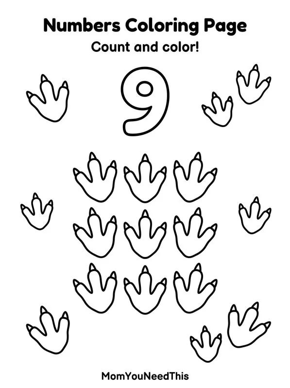
🎨 Download the Number 9 Coloring Page
Count and color the number 9!
⬇️ Download Number 9 🖨️ Print(opens in new tab)🎁 Free printable for toddlers & preschoolers
Number 10 Coloring Page
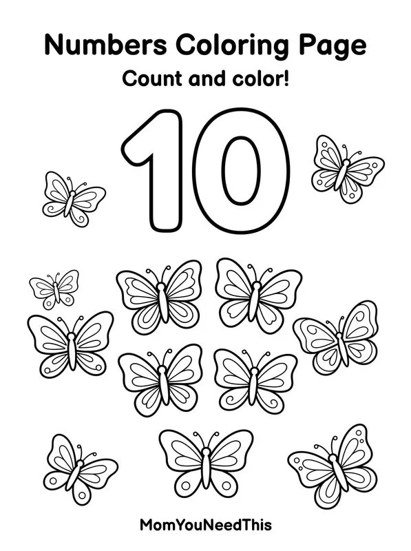
🎨 Download the Number 10 Coloring Page
Count and color the number 10!
⬇️ Download Number 10 🖨️ Print(opens in new tab)🎁 Free printable for toddlers & preschoolers
Number 1 Tracing Page
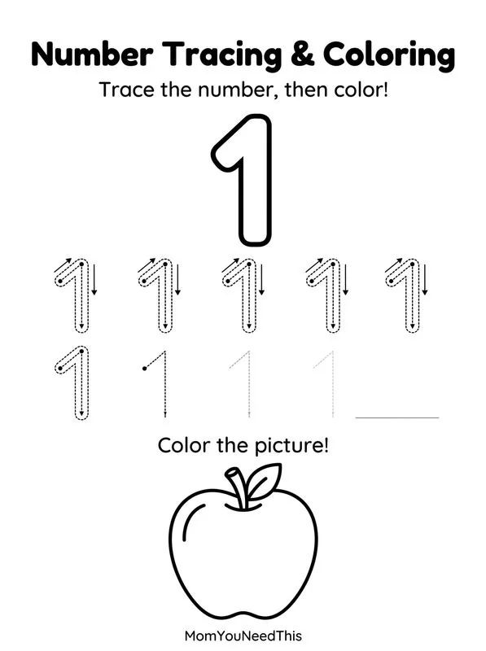
🎨 Download the Number 1 Tracing Page
Trace the number 1, then color the picture!
⬇️ Download Number 1 Tracing 🖨️ Print(opens in new tab)🎁 Free printable for toddlers & preschoolers
Number 2 Tracing Page
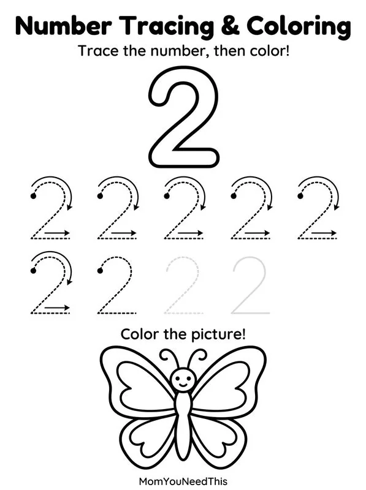
🎨 Download the Number 2 Tracing Page
Trace the number 2, then color the picture!
⬇️ Download Number 2 Tracing 🖨️ Print(opens in new tab)🎁 Free printable for toddlers & preschoolers
Number 3 Tracing Page
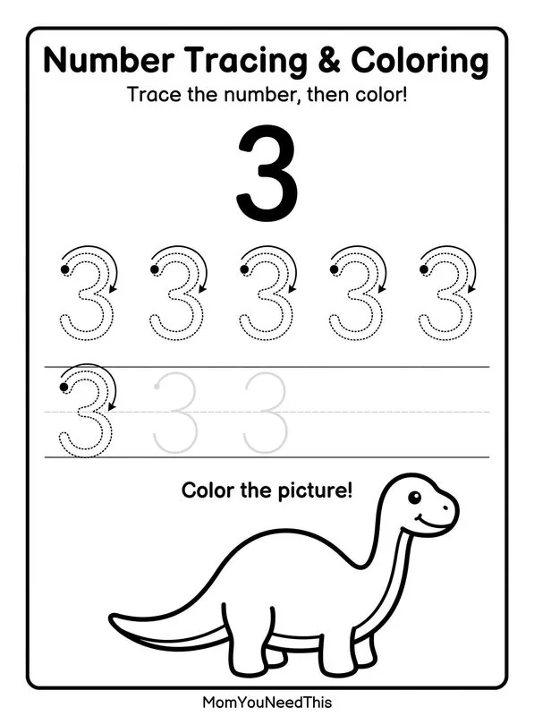
🎨 Download the Number 3 Tracing Page
Trace the number 3, then color the picture!
⬇️ Download Number 3 Tracing 🖨️ Print(opens in new tab)🎁 Free printable for toddlers & preschoolers
Number 4 Tracing Page
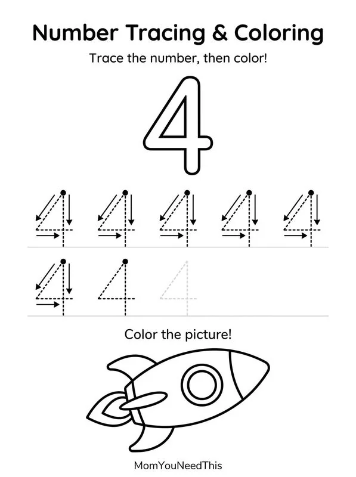
🎨 Download the Number 4 Tracing Page
Trace the number 4, then color the picture!
⬇️ Download Number 4 Tracing 🖨️ Print(opens in new tab)🎁 Free printable for toddlers & preschoolers
Number 5 Tracing Page
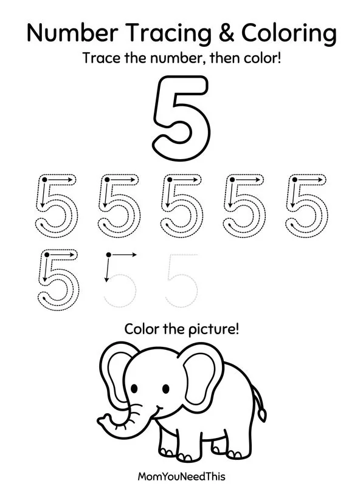
🎨 Download the Number 5 Tracing Page
Trace the number 5, then color the picture!
⬇️ Download Number 5 Tracing 🖨️ Print(opens in new tab)🎁 Free printable for toddlers & preschoolers
Number 6 Tracing Page
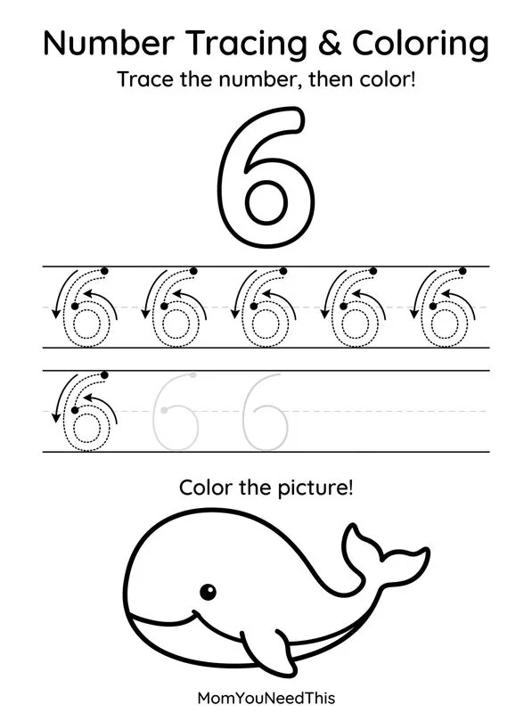
🎨 Download the Number 6 Tracing Page
Trace the number 6, then color the picture!
⬇️ Download Number 6 Tracing 🖨️ Print(opens in new tab)🎁 Free printable for toddlers & preschoolers
Number 7 Tracing Page
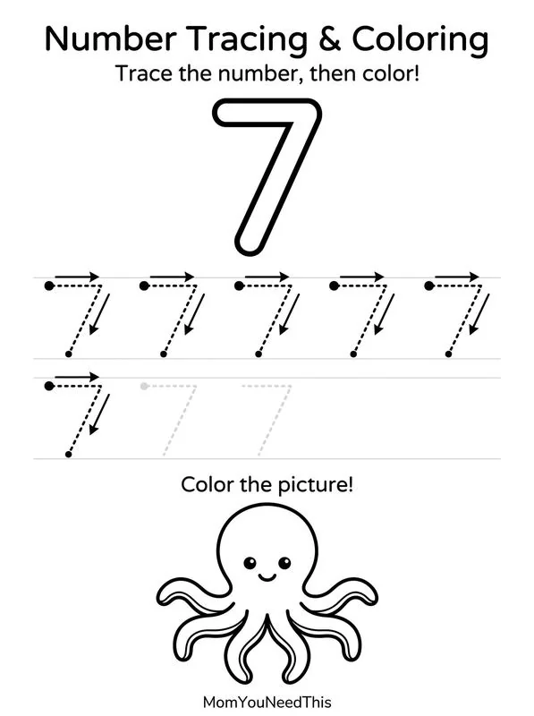
🎨 Download the Number 7 Tracing Page
Trace the number 7, then color the picture!
⬇️ Download Number 7 Tracing 🖨️ Print(opens in new tab)🎁 Free printable for toddlers & preschoolers
Number 8 Tracing Page
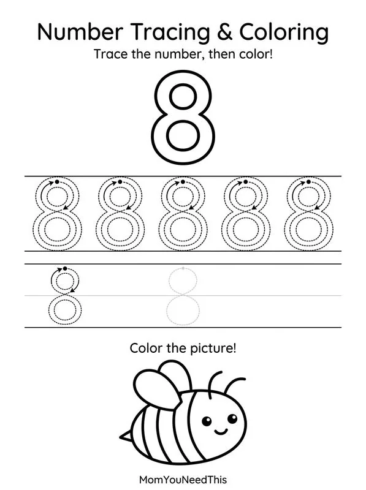
🎨 Download the Number 8 Tracing Page
Trace the number 8, then color the picture!
⬇️ Download Number 8 Tracing 🖨️ Print(opens in new tab)🎁 Free printable for toddlers & preschoolers
Number 9 Tracing Page
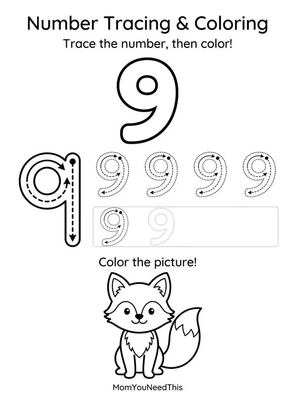
🎨 Download the Number 9 Tracing Page
Trace the number 9, then color the picture!
⬇️ Download Number 9 Tracing 🖨️ Print(opens in new tab)🎁 Free printable for toddlers & preschoolers
Number 10 Tracing Page
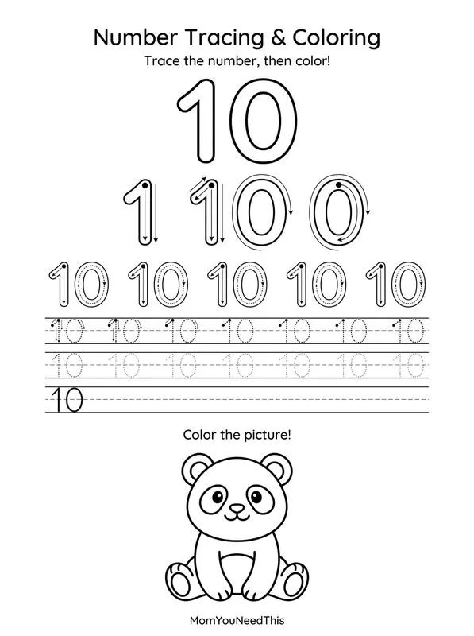
🎨 Download the Number 10 Tracing Page
Trace the number 10, then color the picture!
⬇️ Download Number 10 Tracing 🖨️ Print(opens in new tab)🎁 Free printable for toddlers & preschoolers
🔢 How To Use This Printable
- Download and print the coloring page on letter-size paper — print a few extras so there is no fighting over favorites.
- Set out crayons, markers, or colored pencils and let your child choose their colors.
- Color together or side by side, chatting about the pictures as they come to life.
- Show off the masterpiece on the fridge or in a learning binder to celebrate the effort.
Why Number Coloring Pages Help Kids Learn
Number coloring activities combine creativity with early math practice. Children can build number recognition, counting confidence, pencil control, and focus while enjoying a fun hands-on activity.
🔢 More Early Math Activities
Keep learning with counting worksheets, number tracing pages, patterns, shapes, and other preschool math activities.
🎁 View Free Learning ActivitiesMore Free Kids Resources
Explore alphabet activities, coloring pages, preschool worksheets, potty training resources, and fun learning ideas for toddlers.
📚 Explore All Resources🔢 Learning With coloring by number worksheets
This page's colour-by-number sheet is the 1 to 10 sheet (a kite). For a first try, start with the 1 to 5 sheet: its key uses five colours — 1 is red, 2 yellow, 3 green, 4 brown, and 5 light blue — and colouring every numbered section reveals one big apple.
Move up to the 1 to 10 sheet once your child can name 1 to 5 without help. The key doubles to ten colours, and the finished picture is a kite. Work the same way on both sheets: read the key together first, set out only the crayons the key names, then hunt for one number at a time and colour every section carrying it before moving on to the next number.
See number worksheet for more.
❓ Number Coloring Pages FAQ
Is this number coloring pages printable really free?
Yes — this number coloring pages printable is 100% free to download and print at home. No signup and no payment needed. Just tap the download button and print as many copies as you like.
What ages is this printable best for?
It is made for toddlers and preschoolers. Little ones can enjoy it with a grown-up’s help, while older preschoolers can work on it more independently.
What should we color with?
Crayons, washable markers, or colored pencils all work great. For young toddlers, chunky crayons are the easiest to grip.
Are coloring by number worksheets good for preschoolers?
Yes — coloring by number worksheets help preschoolers practice number recognition, color matching, and fine motor skills. Start with numbers 1 to 5 and keep sessions short and fun.
🔗 More Free Printables You’ll Love
- Free Alphabet Coloring Pages Free printable alphabet coloring pages for little learners.
- Free Letter B Coloring Pages Free printable letter b coloring pages for little learners.
- Free Letter C Coloring Pages Free printable letter c coloring pages for little learners.
- Free Math Coloring Pages Free printable math coloring pages for little learners.